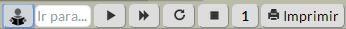

O modo didático
O modo didático foi pensado para quem está aprendendo gaita ponto.
As funcionalidades
presentes permitem ao usuário executar detalhadamente trechos da
partitura. Abaixo detalhamos as funções:
Barra de botões

A barra de botões possui dois modos de operação: o modo normal e
o modo didático. No modo didático,
estão disponíveis os 8 botões listados acima:
- Modo normal/didático: Chaveia entre os dois modos. Ao
chavear de volta ao modo normal é como se a partitura estivesse
pausada. Se pressionar o botão executar, a partitura será executada do
ponto onde parou no modo didático.
- Ir para: Permite executar um compasso específico. Para tanto, digite o número do compasso e pressione [Enter].
- Passo a passo: executa nota por nota do compasso, uma a cada vez que o botão é pressionado.
- Compasso: executa o compasso corrente até o seu final.
- Repetir: repete o último compasso executado
- Parar: para a execução atual e posiciona no primeiro compasso.
- Andamento: ajusta o andamento em três valores diferentes. O valor "1"
significa o andamento normal, "1/2" significa que a partitura será
executada com a metade da velocidade normal e, por fim, "1/4" executará
a partitura 4 vezes mais lentamente que no andamento normal.
Pressionando mais uma vez, o andamento voltará para o valor "1".
- Imprimir: abre a tela para visualizar e imprimir a partitura
ativa.